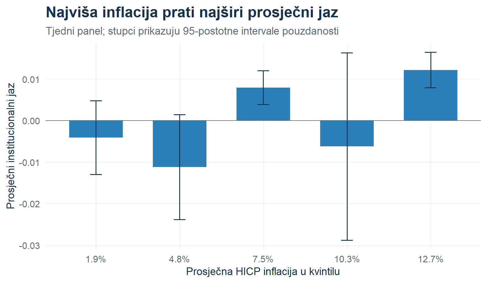

EKONOMSKI SUSRETI 2026
Inflacija je prošla vrhunac

Nakon vrhunca inflacija je niža, ali rast cijena nije prestao.
Svaki stupac je jedan mjesec. Siječanj 2021. – kolovoz 2026. *2026. ima osam mjeseci. Godišnja stopa HICP inflacije (%).
EKONOMSKI SUSRETI 2026
Institucionalni udio ostaje nizak

Povremeni skokovi prekidaju putanju. Kasnije vrijednosti pretežno su niže.
Svaki stupac je jedan mjesec. Siječanj 2021. – kolovoz 2026. *2026. ima osam mjeseci. Ponderirani udio (%), potencijalni doseg i istaknutost institucije.
EKONOMSKI SUSRETI 2026
Broj objava i udio kroz svih 68 mjeseci

Više objava ne mora značiti veći udio u raspravi.
Svaki stupac je jedan mjesec. Siječanj 2021. – kolovoz 2026. *2026. ima osam mjeseci. Paneli imaju zasebne ljestvice i različite jedinice.
EKONOMSKI SUSRETI 2026
Koliko često institucija ulazi u temu

Relativna učestalost pri kraju razdoblja niža je nego na početku.
Svaki stupac je jedan mjesec. Siječanj 2021. – kolovoz 2026. *2026. ima osam mjeseci. Omjer broja objava (%).
EKONOMSKI SUSRETI 2026
Doseg pojedine objave ima vlastitu putanju

Nekoliko snažnih skokova dosega razlikuje ovu putanju od učestalosti.
Svaki stupac je jedan mjesec. Siječanj 2021. – kolovoz 2026. *2026. ima osam mjeseci. Omjer, ne postotak čitatelja.
EKONOMSKI SUSRETI 2026
Nalaz je jasniji za učestalost

Na +1 postotni bod inflacije
−0,47 p.b.
promjena udjela HNB članaka
p = 0,012
Nema jasnog učinka
na doseg po članku
p = 0,346
Mjesečni modeli, N = 36. Nalaz je jasniji za relativnu učestalost.
EKONOMSKI SUSRETI 2026
Učestalost i buduća očekivanja

Što pokazuje procjena
- linearno mapiranje: značajni testirani horizonti 2.–12. tjedna
- stepenasto: nalaz slabi na 10. i 12. tjednu
- prediktivna veza, bez identificiranog uzročnog učinka
Nalaz ovisi o mapiranju očekivanja i promatranom uzorku.